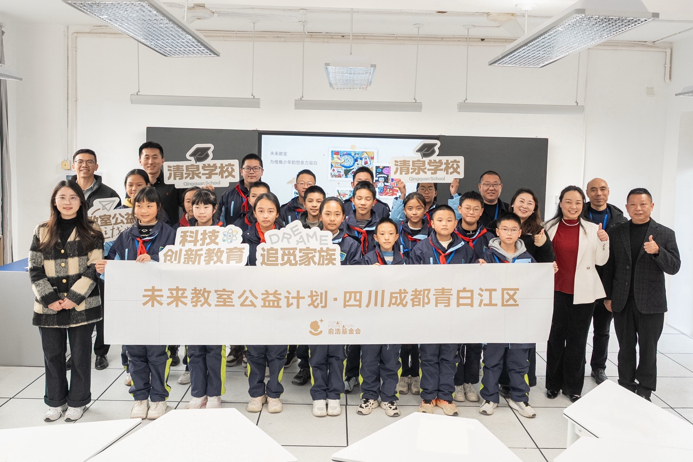
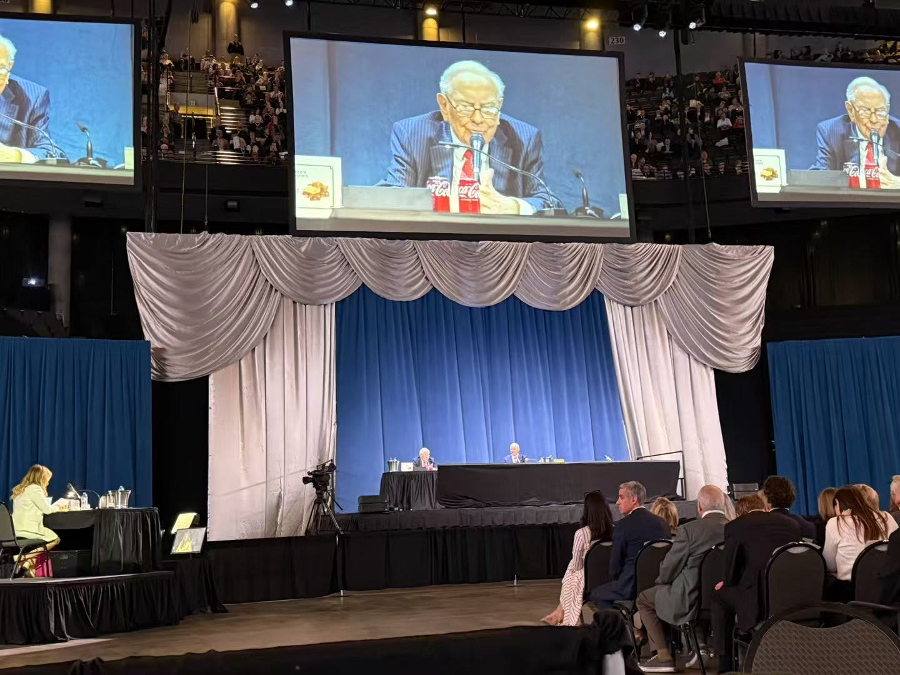

Moments

Setting foot on Antarctica
One of 10 employees the company rewarded with a trip to Antarctica.

Reaching the South Pole
Reached the South Pole and documented the journey across Antarctica.

Dreame Foundation donates a classroom🧑🏫
The Dreame Foundation donated a classroom in support of the Future Classroom charity program.

Signing with the Chengdu Municipal Government in Berlin on behalf of Dreame
Attended the China (Chengdu)–Berlin Economic and Trade Cooperation Conference as a special guest on behalf of Dreame; met one-on-one with the Party Secretary of Chengdu, held talks on cooperation and signed an agreement.

Signing with the Chengdu Municipal Government in Berlin on behalf of Dreame
The China (Chengdu)–Berlin Economic and Trade Cooperation Conference (photos of the talks are confidential)

Graduating from Penn and attending Buffett’s last annual meeting
Graduated from the University of Pennsylvania, then traveled to Omaha, Nebraska, the same week for Warren Buffett’s last Berkshire Hathaway annual shareholders meeting.

Chengdu fund signing ceremony
Attended the Chengdu fund signing ceremony.